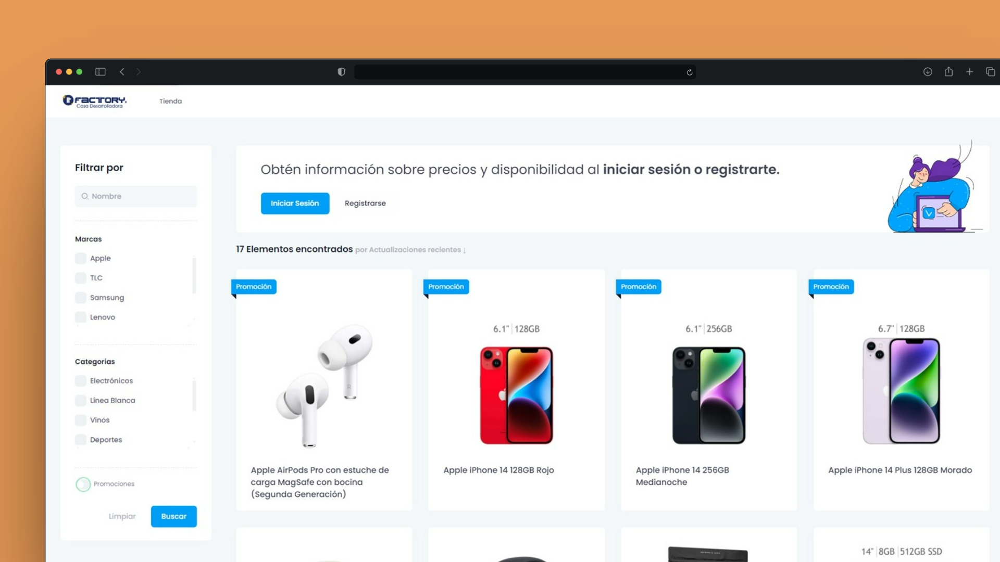
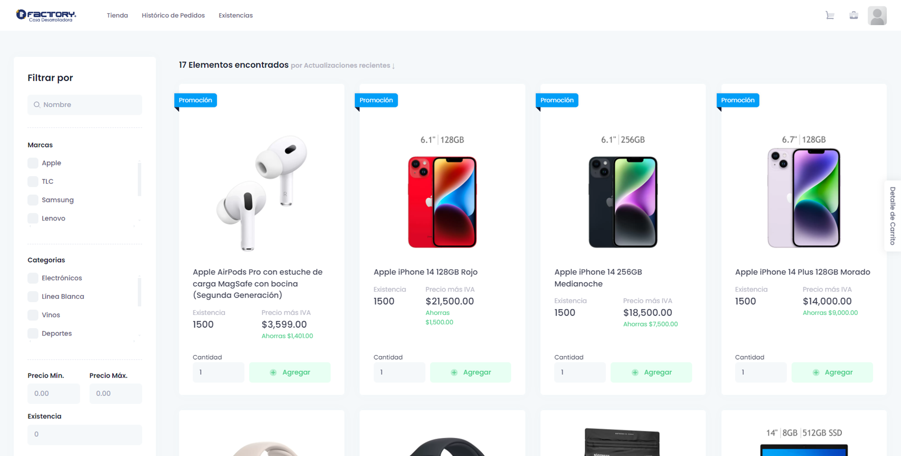
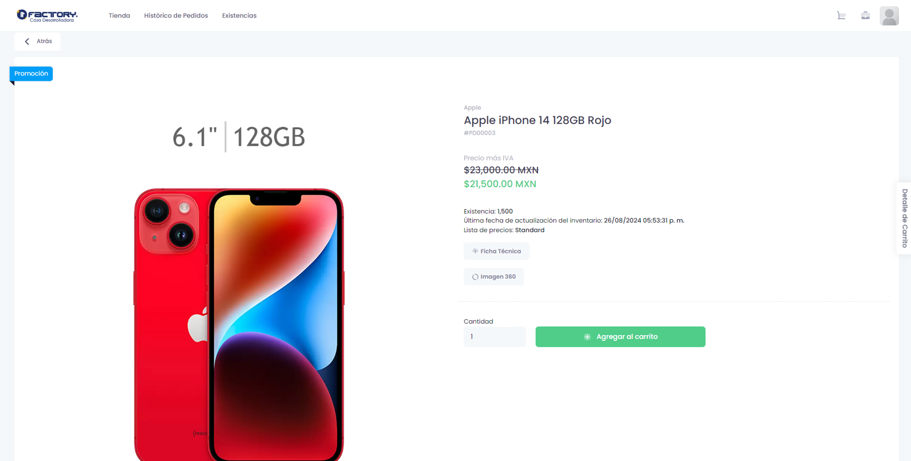
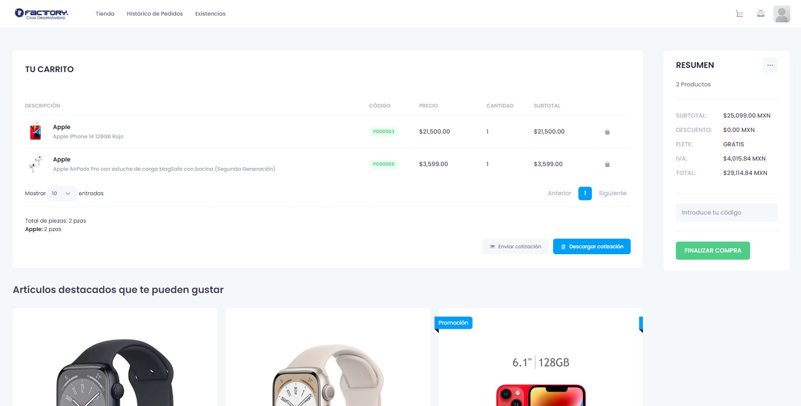
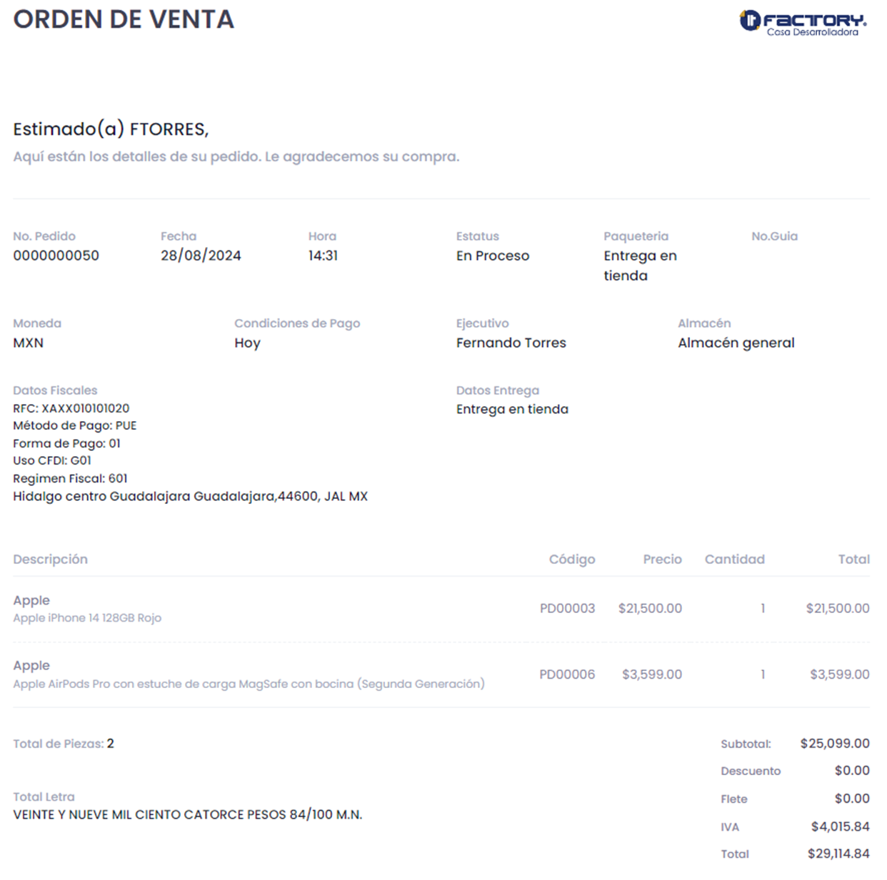

Portal de Distribuidores
Plataforma B2B para centralizar pedidos, catálogo, checkout e integración con SAP Business One, reduciendo fricción operativa en el proceso comercial.


Entrega profesional
Portal de pedidos
Catálogo y preórdenes
Checkout mixto
Portal web diseñado para que distribuidores consulten productos, armen pedidos y completen un flujo de compra sin depender de canales manuales. La solución conecta la experiencia ecommerce con SAP Business One para mantener control, continuidad operativa y trazabilidad comercial.
Contexto y solución
El proceso de pedidos requería más autonomía para distribuidores, mejor visibilidad del catálogo y una integración confiable con SAP Business One. Se construyó una plataforma web que traduce el flujo comercial B2B a una experiencia tipo ecommerce, registrando preórdenes y soportando métodos de pago alineados al proceso interno.
Capacidades principales
Catálogo SAP
Productos disponibles desde SAP B1 para consulta comercial dentro del portal.
Pedido ecommerce
Detalle de producto, carrito y confirmación pensados para distribuidores B2B.
Checkout flexible
Pago con PayPal o comprobante bancario, manteniendo evidencia asociada al pedido.
Preórdenes SAP
Registro automático de solicitudes para dar continuidad al proceso comercial interno.
Integración y arquitectura
La implementación priorizó una separación clara entre interfaz, reglas de negocio, persistencia e integración ERP, manteniendo el portal enfocado en usabilidad sin perder control técnico del flujo transaccional.
Vistas ASP.NET MVC, HTML/CSS, JavaScript y jQuery para catálogo, carrito y checkout.
Lógica C# para validaciones, pedidos, métodos de pago y estados del flujo comercial.
SQL Server como soporte de persistencia, consulta y trazabilidad operativa.
Conexión con SAP Business One para catálogo de productos y generación de preórdenes.
Retos técnicos
Flujo transaccional con dependencias externas
El principal reto fue coordinar catálogo, carrito, pagos, comprobantes e integración SAP sin perder trazabilidad ni romper la continuidad del proceso comercial ante distintos escenarios de compra.
Mi rol
Desarrollé módulos frontend y backend en ASP.NET MVC y C#.
Implementé carrito, checkout, carga de comprobantes y validaciones de experiencia.
Integré productos y pedidos con SAP Business One mediante su API.
Adapté reglas del proceso comercial a un flujo web trazable y mantenible.
Un portal B2B que redujo fricción comercial y conectó ventas con SAP.
La solución mejoró la autonomía del distribuidor, ordenó la captura de pedidos y permitió que el equipo comercial trabajara con información más trazable y lista para gestión interna.
-
Periodo:
2021
-
Tipo:
Portal Web B2B / Ecommerce empresarial
-
Empresa:
It Consultant
-
Rol:
Desarrollador Full Stack .NET
-
Integraciones:
SAP Business One, PayPal y Crystal Reports
-
Disponibilidad:
Proyecto interno / No público
Capturas del portal
Catálogo, detalle de producto, carrito y confirmación del flujo de pedido.


Catálogo de productos sincronizado desde SAP Business One.


Detalle de producto con información clara para la decisión de compra.


Carrito de compras con resumen del pedido y control del flujo.


Confirmación de pedido antes de continuar con la gestión interna.